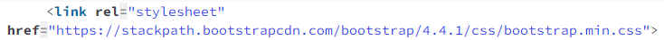
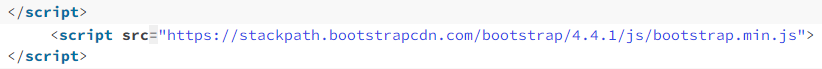

Bootstrap es un framework CSS de código abierto que favorece el desarrollo web de un modo más sencillo y rápido. Incluye plantillas de diseño basadas en HTML y CSS con la que es posible modificar tipografías, formularios, botones, tablas, navegaciones, menús desplegables, etc. También existe la posibilidad de utilizar extensiones de Javascript adicionales.
Ventajas de usar Bootstrap
Actualmente bootstrap es uno de los frameworks más usados.
Desarrollo ágil y personalizado: Su gran librería de componentes permite agilizar el desarrollo de páginas responsive personalizadas.
Compatibilidad con navegadores: Es compatible con la mayoría de navegadores del mercado, desde Chrome o Firefox, hasta Opera, Safari o Microsoft Edge.
Sistema de imágenes: Proporciona un sistema de redimensionamiento de imágenes, las cuales se adaptan al tamaño correcto de forma automática.
Mobile First: UX y SEO: Permite cumplir con la máxima actual del diseño web, conocida como Mobile First (Móvil Primero), un factor clave tanto para la experiencia de usuario como para el SEO (posicionamiento en buscadores).
¿Cómo funciona Bootstrap?
Bootstrap está constituido por una serie de archivos CSS y JavaScript responsables de asignar características específicas a los elementos de la página.
Hay un archivo principal llamado bootstrap.css, que contiene una definición para todos los estilos utilizados. Básicamente, la estructura del framework se compone de dos directorios:
«css«: contiene los archivos necesarios para la estilización de los elementos y una alternativa al tema original.
«js«: contiene la parte posterior del archivo bootstrap.js (original y minificado), responsable de la ejecución de aplicaciones de estilo que requieren manipulación interactiva.
La forma más sencilla de utilizar Bootstrap es utilizando su red de distribución de contenidos o CDN (del inglés Content Delivery Network). El inconveniente es que se necesita Internet para que funcione correctamente. Este método se suele utilizar para realizar pruebas rápidas.


Container
Los contenedores son el elemento de diseño más básico en Bootstrap y son necesarios cuando se utiliza nuestro sistema de cuadrícula predeterminado . Los contenedores se utilizan para contener, rellenar y (a veces) centrar el contenido dentro de ellos. Si bien los contenedores se pueden anidar, la mayoría de los diseños no requieren un contenedor anidado.
Grid System
El sistema de cuadrícula (grid) de Bootstrap utiliza una serie de contenedores, filas y columnas para diseñar y alinear el contenido. Está construido con flexbox y es completamente responsive. A continuación se muestra un ejemplo y una explicación detallada de cómo se compone el sistema de cuadrículo.
Flex
Administra rápidamente el diseño, la alineación y el tamaño de las columnas de la cuadrícula, la navegación, los componentes y más con un conjunto completo de utilidades flexibles responsive.
Control Caroucel
El carrusel es una presentación de diapositivas para recorrer una serie de contenidos, creada con transformaciones 3D CSS y un poco de JavaScript. Funciona con una serie de imágenes, texto o marcado personalizado.
Control Navbar
La barra de navegación que se ubica generalmente en la parte superior de la página contiene los enlaces principales para navegar el sitio web.
Cumpliendo con la premisa fundamental de Bootstrap de que el sitio sea adaptable a cualquier dispositivo según el tamaño de la ventana veremos las opciones una al lado de otra (en una pantalla grande) o una debajo de otra (un celular por ejemplo)
Algunas ventajas de Flex
Flexbox distribuye automáticamente el espacio disponible entre los elementos flexibles.
Flexbox facilita la alineación de los elementos tanto en el eje principal como en el eje transversal.